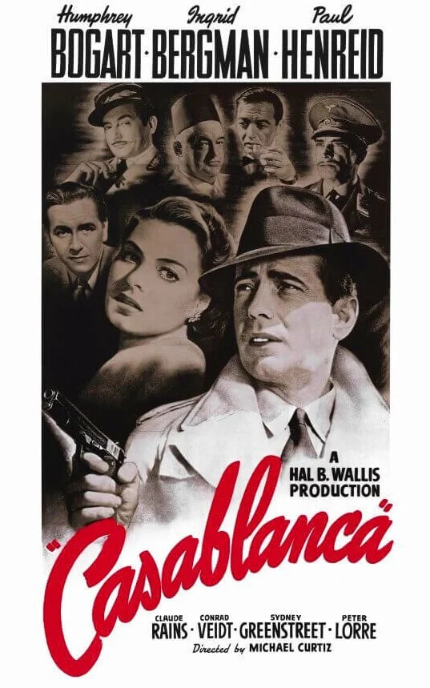
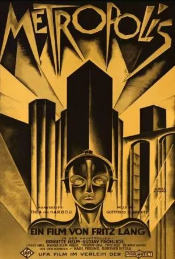
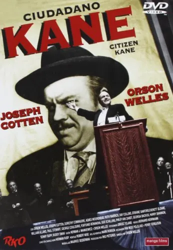
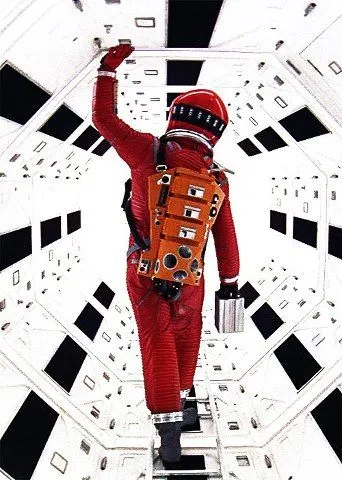

Clásico Imperdible

Drama / Romance
★ 9.2
Casablanca
Dirigida por Michael Curtiz (1942)
En el Marruecos de la Segunda Guerra Mundial, el propietario de un club nocturno debe decidir si ayuda a su antiguo amor y a su esposo a ponerse a salvo.
Expresionismo Mudo

Sci-Fi / Silente
★ 8.3
Metrópolis
Dirigida por Fritz Lang (1927)
En un futuro distópico dividido entre pensadores y trabajadores, el hijo del gobernante de la ciudad se enamora de una líder de la clase trabajadora.
Innovación Técnica

Drama / Misterio
★ 8.9
Ciudadano Kane
Dirigida por Orson Welles (1941)
Tras la muerte de un poderoso magnate de los medios de comunicación, un grupo de periodistas intenta descifrar el significado de sus últimas palabras: «Rosebud».
Cine de Culto

Sci-Fi / Filosófico
★ 9.0
2001: Odisea del Espacio
Dirigida por Stanley Kubrick (1968)
Una enigmática estructura influye en la evolución humana antes de que una nave espacial sea enviada a Júpiter bajo el control de la inteligencia artificial HAL 9000.
Musical / Comedia
★ 8.3
Cantar bajo la lluvia
Dirigida por Gene Kelly & Stanley Donen (1952)
Una compañía de producción cinematográfica y sus estrellas hacen la difícil transición del cine mudo al sonoro en Hollywood a finales de los años 20.
Policial / Drama
★ 9.2
El Padrino
Dirigida por Francis Ford Coppola (1972)
El envejecido patriarca de una dinastía familiar transfiere el control de su organización a su reacio hijo menor.